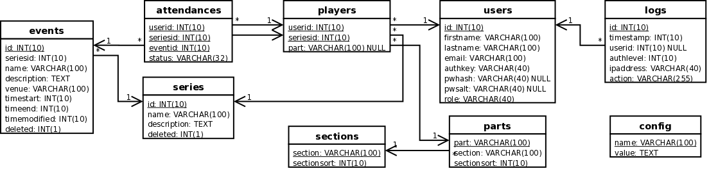
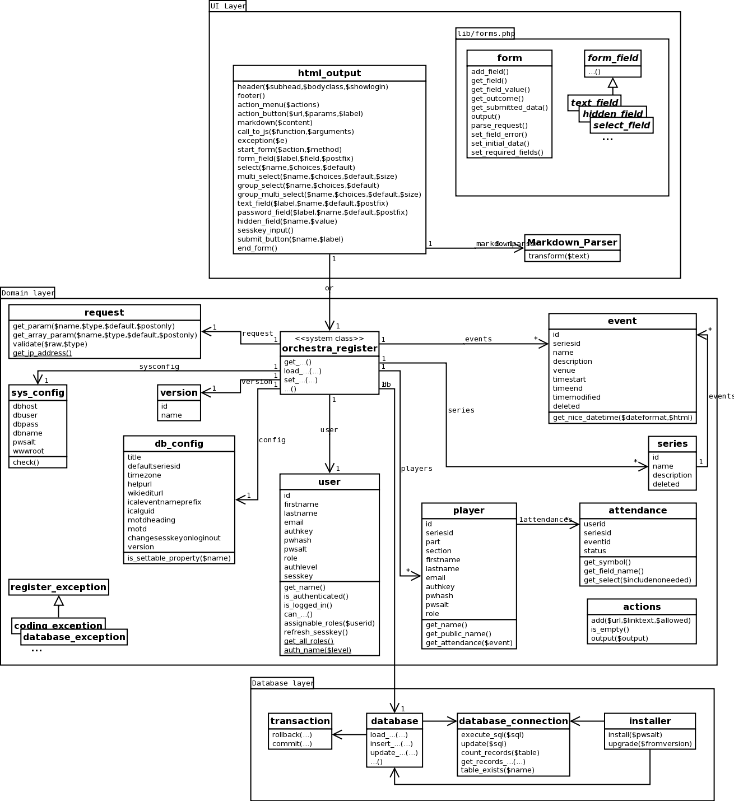

There is a three-layer architecture.
The database layer is in the files lib/database.php, lib/database_connection.php, lib/transaction.php and lib/installer.php.
The domain layer made up of all the other classes in the lib folder, that are not otherwise mentioned here. That contains the system class orchestra_register, which acts as a facade to the rest of the domain classes. Then there is a class for each significant database table (series, event, player, user, attendance). Then there are some classes that hold the configuration (version, sys_config and db_config).
The user interface layer adopts a transaction script architecture, with the scripts living in the top-level folder. To avoid duplicated code, there are helper classes html_output in lib/html_output.php, and a set of classes for representing forms in lib/forms.php.
If you like to think of web applications according to the Model-View-Controller paradigm, note that there is a point in each transaction script where all the code before that point can be viewed as controller code, and all the code after that point can be viewed as view code. The domain layer provides the model.


The UI scripts can be roughly split into several categories:
Scripts that are basically just a view. For example, index.php, event.php, player.php, logs.php, wikiformat.php and ical.php.
Scripts that display a list of things, with some facilities for editing them. For example events.php, series.php, users.php.
Scripts that use a form to edit something. For example editevent.php, editpart.php, editsection.php, editseries.php, edituser.php, editmotd.php and admin.php, although the last two are slightly different.
The scripts login.php and logout.php handle authenticating users.
The remaining others: savechoices.php which process the Save changes submission from index.php; players.php for editing the list of players for a rehearsal series; extractemails.php for getting a list of email addresses based on the register data; and install.php deals with installing the software initially.
Note that the files config.php and version.php (and config-example.php) in the top-level folder are configuration files. script.js and styles.css (and styles-extra.css, if you use it) are part of the UI, and used on every page. setup.php is the file that all the scripts need to include to get access to the standard libraries.